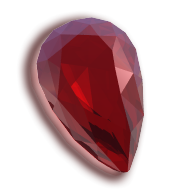

|

There are presently 2 packages available via Ruby Rain! Copyright (c) 2005 Thomas Sawyer |
Ruby Rain
"Don't get wet."
Ruby Rain is an Ruby package manager uniques for it's simplicity in the use of web technologoes. Once you install Ruby Rain or you system the packages will flow like water on a hot summer day. Simply peruse the Rain Catalog pages, find what you want, and in one click, install away. Spotlight: Hello World! The traditional hello world program. For Nuby and testing purposes of course.
require 'helloworld'
Hello, World!
Install Now
Spotlight: Ruby Facets Perhaps some of you recall the early days of Ruby Facets, when it was but a wee lib.
require 'facets'
module Fruit
def throw ; puts "Splat!" ; end
end
class Tomato
is Fruit
def throw ; puts "Quash!" ; end
def throw_hard ; as(Fruit).throw ; end
end
Another unique feature Facets brings to the table is require namespaces:
$LOAD_SPACE['myname'] = [ 'mylib/dir1', 'mylib/dir2' ]
require 'myname:foolib'
Ruby will look in both directory Hope you've enjoyed this Spotlight. Now you too can enjoy the plethora of atomic methods, classes, module and frameworks. Legaliese Ruby Rain, Copyright (c) 2005 Thomas Sawyer Ruby Rain is provided under the Ruby License. THIS SOFTWARE IS PROVIDED "AS IS" AND WITHOUT ANY EXPRESS OR IMPLIED WARRANTIES, INCLUDING, WITHOUT LIMITATION, THE IMPLIED WARRANTIES OF MERCHANTABILITY AND FITNESS FOR A PARTICULAR PURPOSE. |